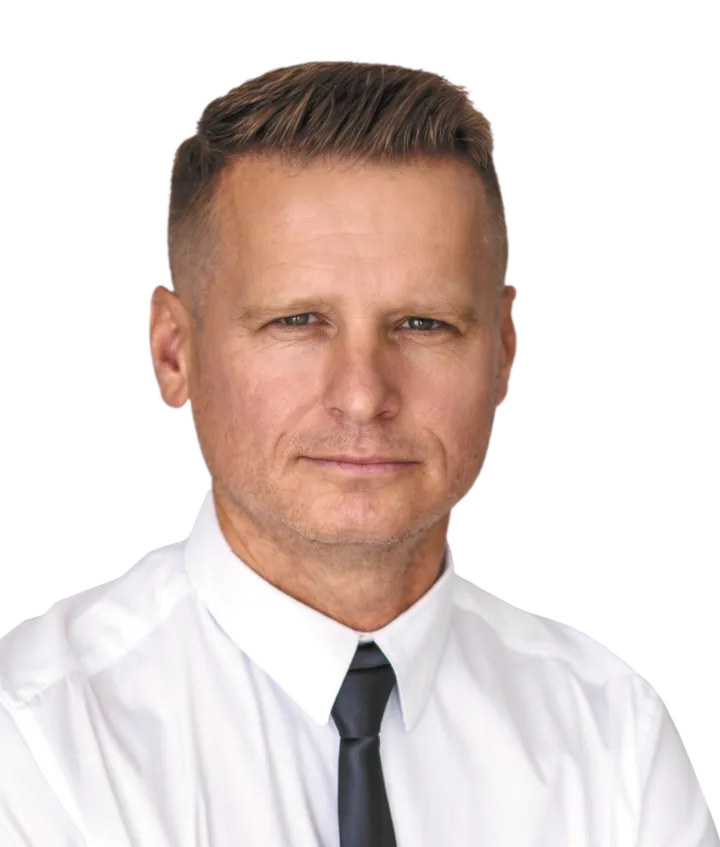
Ako starosta obce Horné Srnie vnímam, že rozvoj regiónu stojí na úzkej spolupráci obcí a kraja. V krajských voľbách máte v rukách možnosť zakrúžkovať až 9 kandidátov. Využite túto šancu naplno.
JurajHúserka
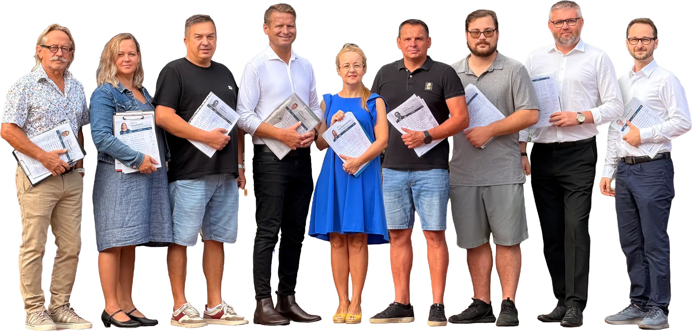

Ako starosta obce Horné Srnie vnímam, že rozvoj regiónu stojí na úzkej spolupráci obcí a kraja. V krajských voľbách máte v rukách možnosť zakrúžkovať až 9 kandidátov. Využite túto šancu naplno.
JurajHúserka
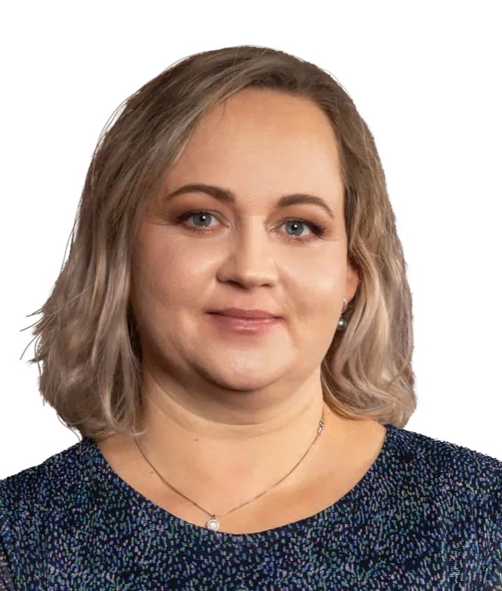
Keď spojím rolu mamy, knihovníčky a cukrárky, viem, že tie najlepšie veci potrebujú starostlivosť, skúsenosť a poctivé ingrediencie. Náš kraj si zaslúži dobré rozhodnutia postavené na pevných základoch.
MartinaBeňovičová
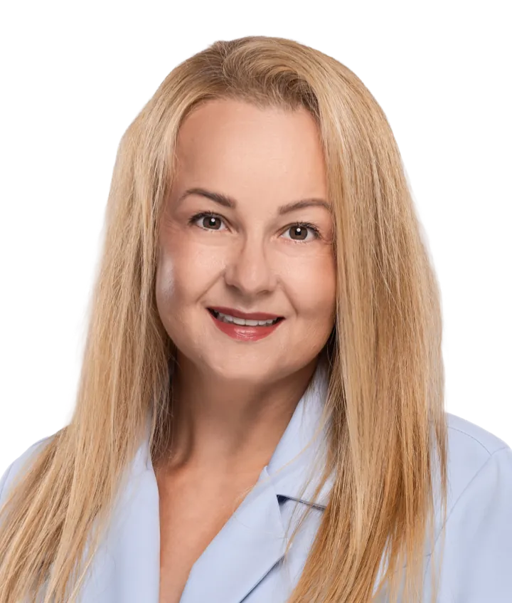
V politike sa riadim rozumom, ale aj svedomím. Verím, že verejný život potrebuje kultúru a ľudskosť. Využite každý svoj hlas a zvoľte si tím krajských poslancov, na ktorý sa môžete spoľahnúť.
ZuzanaMišáková
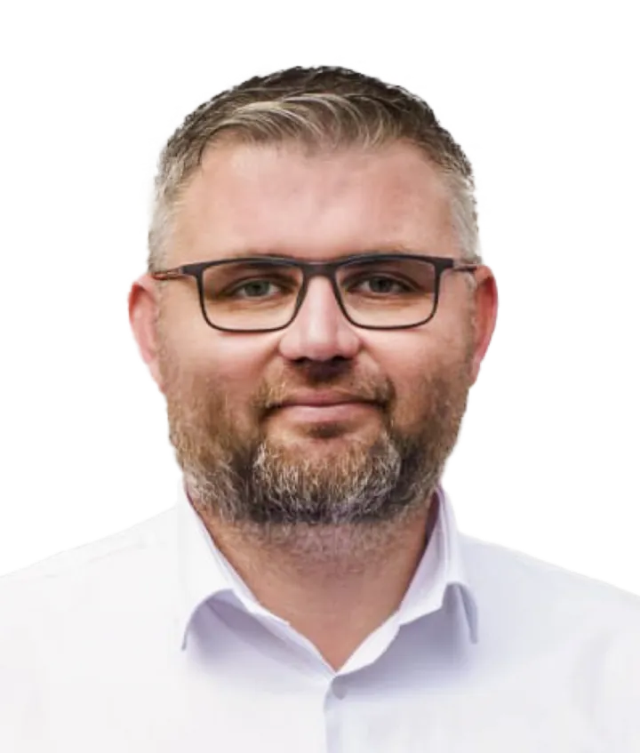
Som poslanec Trenčianskeho samosprávneho kraja a dôverne poznám, ako funguje krajská politika, a viem, že človek nemôže bojovať sám. Skutočné výsledky vznikajú len vtedy, keď ťaháme za jeden povraz.
TomášVaňo
Žijeme tu spolu a náš kraj má obrovský potenciál. Aby sa nám však zmeny podarilo presadiť, potrebujeme silný hlas v krajskom zastupiteľstve. S vašimi 9 krúžkami dokážeme jednoduchšie presadiť všetkých 9 priorít.
Dieram na cestách a zničeným nápravám na autách musí byť koniec. Naše krajské cesty II. a III. triedy spájajú vaše domovy s prácou a školami. Presadzujeme systematické opravy cestnej siete, modernizáciu mostov a rýchlu zimnú údržbu.
Nemôže sa stať, že sa nedostanete do práce alebo dieťa z krúžku domov len preto, že nejde žiadny autobus. Budeme presadzovať moderné, klimatizované autobusy, nízke ceny lístkov pre študentov a seniorov a nadväznosť spojov tak, aby ste nemuseli čakať desiatky minút na prestupoch.
Strach o zdravie blízkych je to najhoršie, čo človek zažíva. Budeme tlačiť na to, aby vo vašich mestách a obciach nebol problém nájsť lekára, tak, ako sa to podarilo starostovi Jurajovi Húserkovi v Hornom Srní.
Kultúra nie sú len budovy, sú to ľudia, tradície a podujatia, ktoré spájajú susedov a komunity. Budeme podporovať miestne domy kultúry, ochotnícke divadlá, remeselníkov a tradičné podujatia v mestách aj na dedinách.
Naši rodičia a starí rodičia budovali tento región a zaslúžia si úctu a špičkovú starostlivosť. Budeme presadzovať dostatok miest v domovoch sociálnych služieb a skracovanie čakacích lehôt.
Bicykel už nie je len hobby, pre mnohých z vás je to každodenný dopravný prostriedok do práce. Budeme pokračovať v budovaní Vážskej cyklomagistrály a nadväzujúcich cyklotrás.
Chceme, aby naše deti zostávali žiť a pracovať doma. Preto budeme investovať do stredných škôl a gymnázií, opravovať internáty a vybavovať učebne najnovšou technikou.
Podporíme starostov a primátorov získavať finančné zdroje na budovanie vodovodov, kanalizácií a na ochranu pred povodňami či suchom.
Šport musí byť dostupný pre každé dieťa a mladého človeka bez ohľadu na to, z akej rodiny pochádza. Zabezpečíme systémovú finančnú podporu pre mládežnícke športové kluby, obnovu školských ihrísk, telocviční a stavbu moderných workoutových či multifunkčných plôch v obciach.
V našej zostave nájdete starostu obce, dlhoročného poslanca, divadelníčku, právnika, sociálneho pracovníka, knihovníčku aj futbalistu. Je to pestrá zmes ľudí a rôznych odborností, vďaka ktorej si vieme navzájom pomôcť, poradiť a pozrieť sa na každý problém z viacerých strán. V kraji tak budete mať zastúpenie na naozaj každú oblasť života.
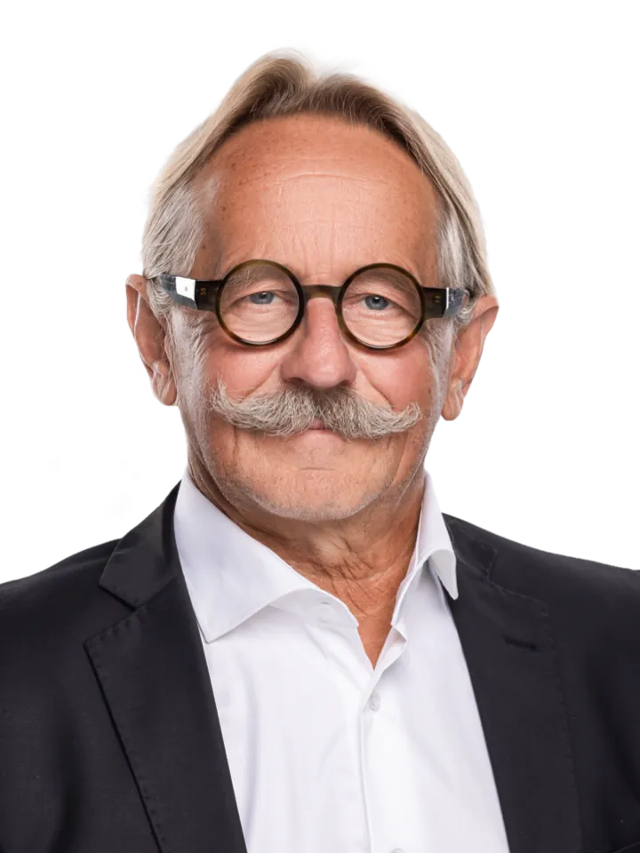
MartinBarčák
Nie som človek veľkých rečí a prázdnych sľubov, verím v poctivú prácu. Narodil som sa v Košiciach, no od detstva žijem v Trenčíne, dnes na Zámostí, a mesto poznám ulicu po ulici. Vo voľnom čase rád behám, pravidelne aj polmaratóny, a radosť čerpám v záhrade a pri gitare. Celý život som folklorista a teší ma, že túto vášeň zdedila aj moja vnučka, s ktorou trénujeme na husliach. Som hrdý manžel, otec a trojnásobný dedko.
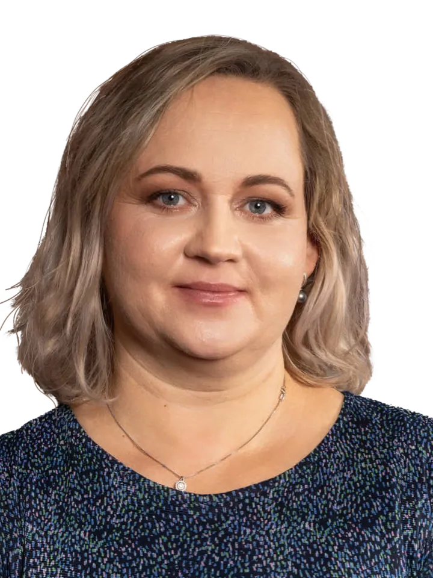
MartinaBeňovičová
Pracujem ako detská knihovníčka a snažím sa u detí pestovať lásku ku knižkám namiesto sedenia pri mobiloch. Celý život žijem v našom kraji, narodila som sa v Trenčíne a vydala som sa do Stankoviec. Som hrdá mama troch detí a vo voľnom čase rada zájdem s naším buldočkom do prírody. Ako mama, knihovníčka a cukrárka viem, že všetko dobré si vyžaduje starostlivosť a poctivé ingrediencie. Presne tak chcem pristupovať aj k rozvoju nášho kraja.
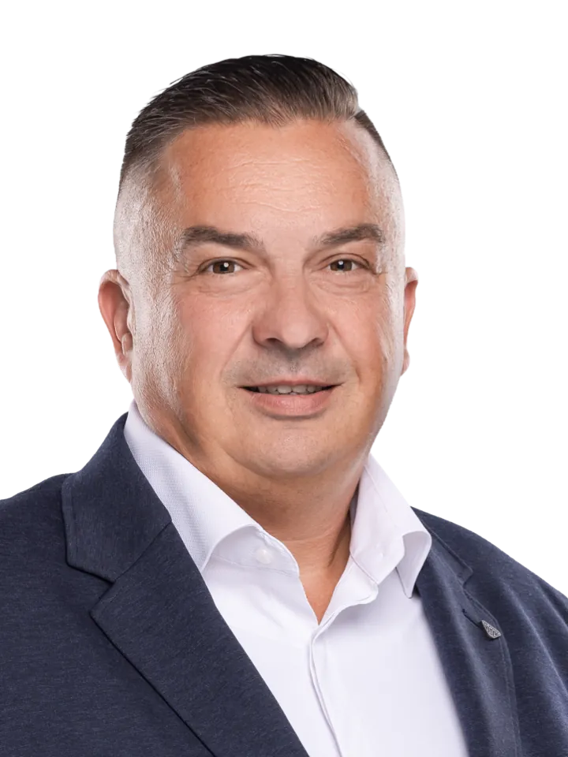
ĽubomírHorný
Som riaditeľ a už 30 rokov pracujem v obchodnej sfére na manažérskych pozíciách. Vo voľnom čase sa venujem vedeniu futbalového športového klubu TFK Opatová, kde vychovávame mládež a spájame športovú komunitu ľudí. Kraj potrebuje skúsených ľudí, aby mohlo pokračovať v napredovaní a dokončení rozbehnutých projektov.
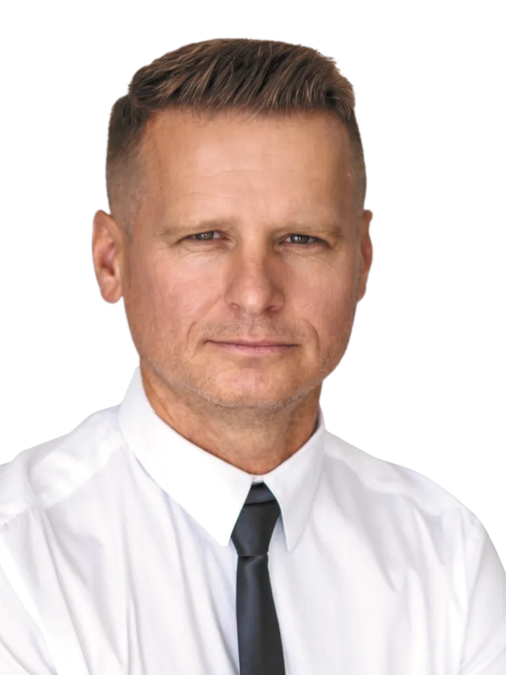
JurajHúserka
Ako starosta Horného Srnia sa každý deň stretávam s konkrétnymi problémami a potrebami ľudí. Som človek, ktorý hľadá spôsoby, nie dôvody, prečo sa veci nedajú. Od začiatku môjho pôsobenia v samospráve sa snažím ľudí spájať, hľadať spoločné riešenia a posúvať veci dopredu. Tento prístup chcem priniesť aj do nášho kraja a skúsenosti zo samosprávy využiť pri hľadaní riešení, ktoré budú zohľadňovať potreby obcí a miest. Vo voľnom čase trávim čas s rodinou a rád si idem zabehať do lesa.
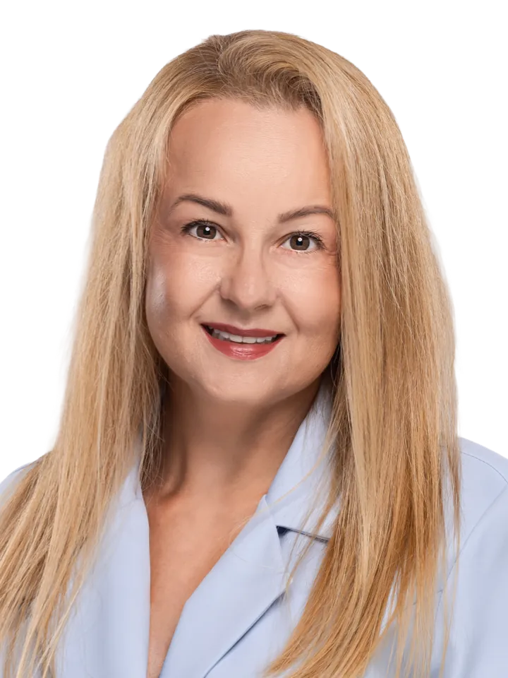
ZuzanaMišáková
Pracujem ako riaditeľka Mestského divadla Trenčín, venujem sa aj vzdelávaniu, zlepšovaniu života komunít a charite. Chcem rozvíjať školskú, kultúrnu a športovú infraštruktúru, dostupnosť ihrísk a relaxačných zón, starostlivosť o deti, ako aj ľudský potenciál kraja vo všetkých pracovných sférach a generáciách. Politika potrebuje kultúrny prístup, nie nenávisť. Mojím krédom je spájať: ľudí, komunity, ale aj miesta. Najväčšou inšpiráciou v mojom živote aj v práci je Trenčín a jeho okolie a ľudia.
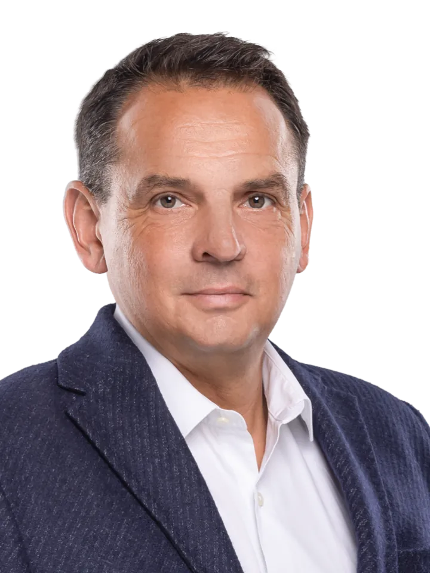
MartinSmolka
Viac ako 30 rokov pracujem v oblasti bezpečnosti a športu a týmto témam sa chcem venovať aj naďalej. Od roku 2014 som poslancom mestského zastupiteľstva v Trenčíne, kde som zároveň predsedom komisie športu. Mám ambíciu ešte viac podporovať šport v kraji a modernizovať športovú infraštruktúru tak, ako sa nám darilo aj po minulé roky.
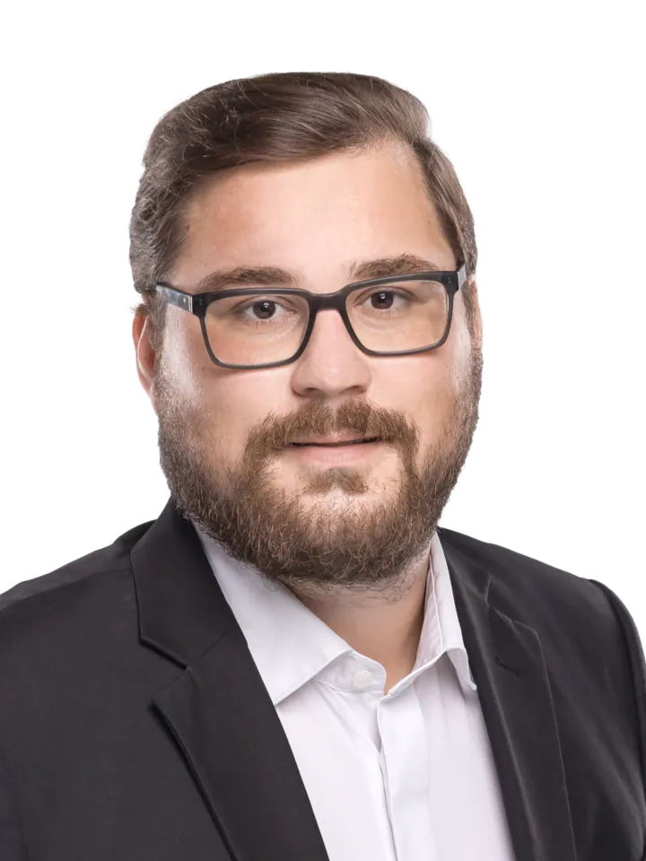
RóbertŠvehla
Na vlastnej koži som videl, ako fungujú mestá v zahraničí a ich sociálna politika. Tieto skúsenosti chcem preniesť do mesta aj kraja. Vyrastal som v Spojených štátoch, vysokú školu som študoval v Kanade a vo Švédsku, a to aj vďaka úspešnej hokejovej kariére môjho otca. V Kanade som absolvoval bakalárske štúdium s dvojodborom politológia a história. Mojou doménou je sociálna politika, ktorej sa v Trenčíne venujem už v súčasnosti.
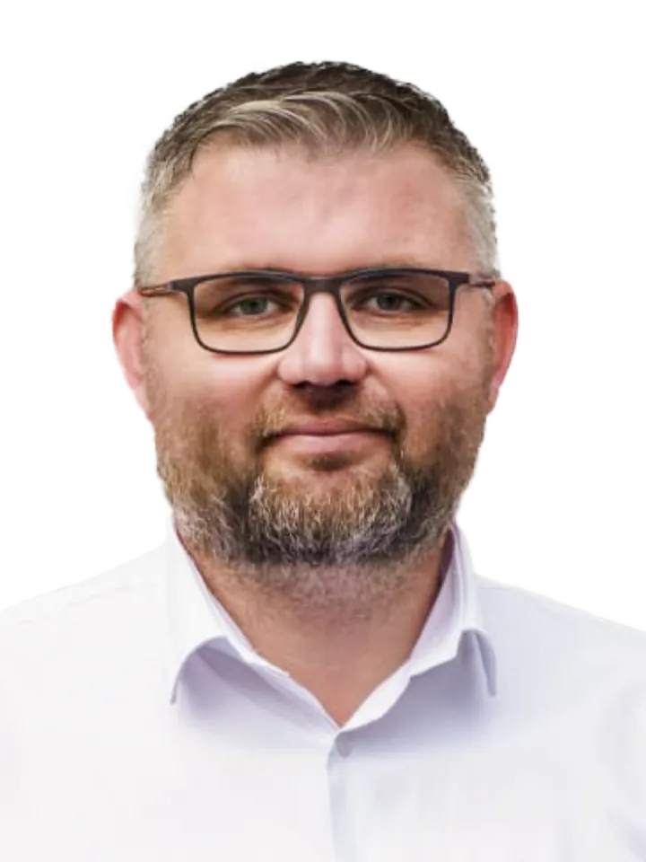
TomášVaňo
Viac ako 20 rokov som sa venoval rozvoju futbalu v Záblatí, kde sa nám z malého dedinského klubu podarilo vybudovať rešpektovanú organizáciu s desiatkami mladých talentov a skvelým zázemím. Popri tom je mojou srdcovkou dychová hudba Textilanka, v ktorej pôsobím ako spevák a prinášam ľuďom radosť z poctivej slovenskej muziky. Som hrdý otec a človek, pre ktorého sú skúsenosti, odhodlanie a práca pre ľudí na prvom mieste.
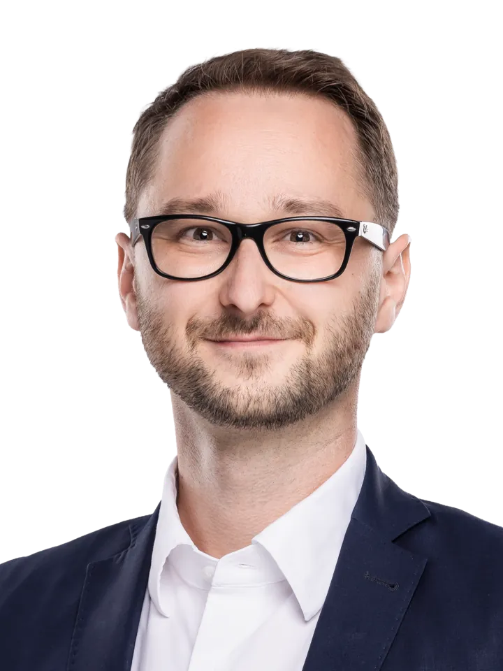
PatrikŽák
Navštevoval som francúzske bilingválne Gymnázium Ľ. Štúra v Trenčíne a neskôr študoval na City University of Seattle. Pracoval som v rodinnej firme aj v medzinárodných spoločnostiach v IT. Od roku 2010 som poslancom za mestskú časť Juh a od roku 2017 zástupcom primátora. Venujem sa práci s ľuďmi a občianskymi združeniami, projektu Európske hlavné mesto kultúry, propagácii mesta a mobilite. Doma ma čakajú manželka, dve malé deti a kocúr.
Každý deň trávime v autách a autobusoch veľa času cestou do práce, do škôl a škôlok, na úrady či k lekárovi. Doprava sa dotýka každého z nás, preto chceme, aby boli naše cesty plynulé, bezpečné a bez zbytočného zdržania. Mesto a kraj musia ťahať za jeden povraz.
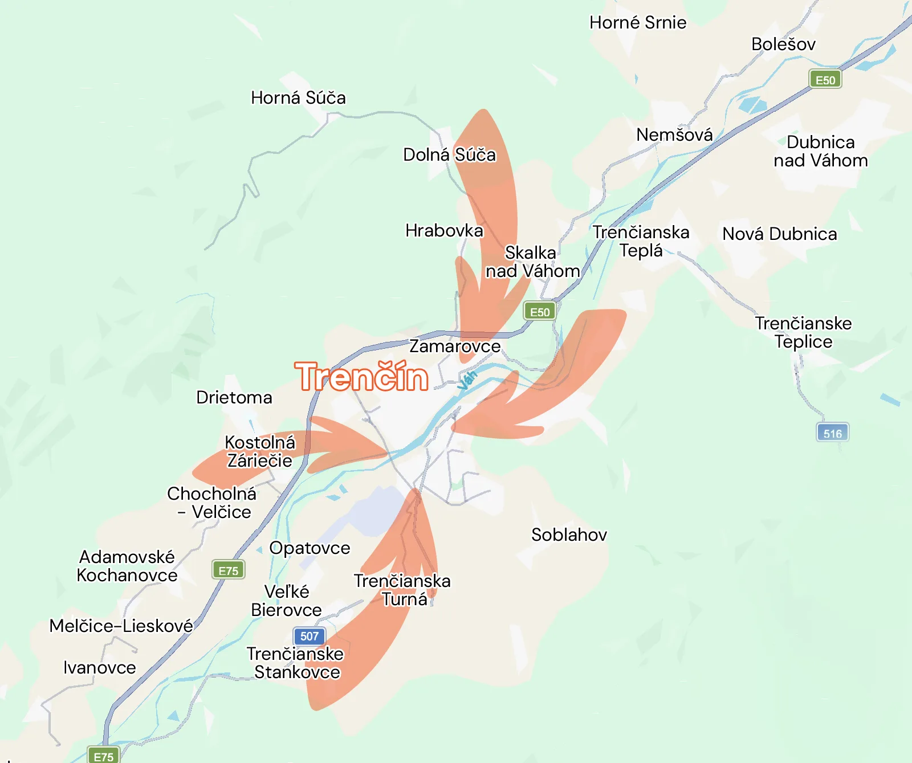
Most z Ostrova do Orechového spojí mesto a odľahčí dopravu
Nový most prepojí Ostrov s Vlárskou ulicou v Orechovom a stane sa súčasťou vnútorného dopravného okruhu. Zmiznú tak zápchy pri Old Herolde a pomôže to smeru na Nemšovú a Súče. Po celej trase pribudne aj samostatná cyklotrasa a bezpečný priestor pre peších priamo na moste.
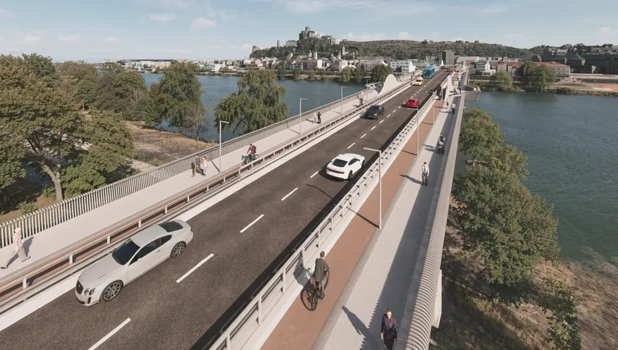
Starý cestný most čaká
veľká obnova
Starý cestný most cez Váh po desaťročiach intenzívneho využívania potrebuje komplexnú rekonštrukciu. Projekt už má právoplatné územné rozhodnutie a pripravuje sa dokumentácia pre stavebné povolenie. Obnova prinesie vyššiu bezpečnosť a lepšie podmienky pre vodičov, peších aj cyklistov. So začiatkom realizácie sa počíta v roku 2027.
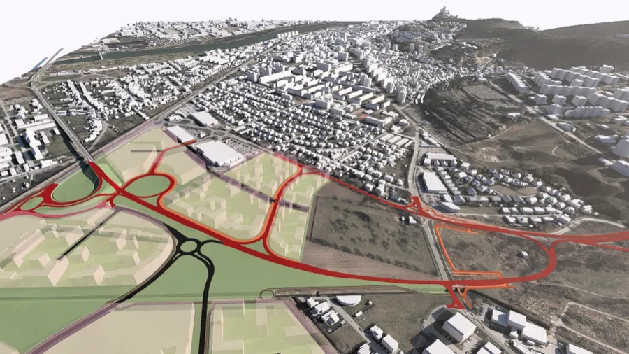
Predĺženie nového mosta odstráni zápchy pri Laugu
Vodiči prichádzajúci zo smeru Trenčianskych Stankoviec a Soblahova denodenne stoja v kolónach pri vstupe do Trenčína. Riešením je predĺženie nového cestného mosta smerom k Juhu ako pokračovanie juhovýchodného obchvatu. Súčasťou je prestavba malej okružnej križovatky na veľký kapacitný okruh, ktorý zvládne niekoľkonásobne vyššiu dopravu, zrýchli prejazd a zvýši bezpečnosť.
Martin BARČÁK
Zlatovská aj Záblatská kyselka sú výborné miesta na príjemnú prechádzku, relax či opekačku. Červená trasa od kyselky vedie lesom na lúky nad Záblatím, kde nájdete parádnu hojdačku a krásny výhľad na celý Trenčín.
Zlatovská kyselka v Mapách Google, otvorí sa v novej karte Záblatská kyselka v Mapách Google, otvorí sa v novej karte
Martina BEŇOVIČOVÁ
Múzeum Príbeh štyroch obcí v Trenčianskych Stankovciach ukazuje históriu spojených dedín Rozvádz, Sedličná, Malé a Veľké Stankovce. Nájdete tu vzácne archeologické nálezy, tradičné kroje a krásne historické fotografie.
Múzeum v Stankovciach v Mapách Google, otvorí sa v novej karte
Ľubomír HORNÝ
Víkendové zápasy v Opatovej, Záblatí či Trenčianskej Turnej ponúkajú parádnu atmosféru. Príďte podporiť lokálne kluby, trénerov a decká, vyvetrať si hlavu, dať si dobré občerstvenie a zažiť čistú radosť zo športu.
Opatová v Mapách Google, otvorí sa v novej karte Záblatie v Mapách Google, otvorí sa v novej karte Trenčianska Turná v Mapách Google, otvorí sa v novej karte
Juraj HÚSERKA
Ranch 13 a Antonstál ponúkajú príjemnú kombináciu na rodinný výlet. Na Ranchi 13 si užijete kone a atmosféru divokého západu. Odtiaľ môžete pokračovať krásnou prírodou Bielych Karpát až k historickému kaštieľu Antonstál, kde si vychutnáte pokoj a čaro tohto výnimočného miesta.
Ranch 13 v Mapách Google, otvorí sa v novej karte Antonstál v Mapách Google, otvorí sa v novej karte
Zuzana MIŠÁKOVÁ
Príďte do KKC Hviezda v Trenčíne na rodinný muzikál Perinbaba alebo hitmuzikál Popoluška. Zažite tam Noc divadiel s bláznivou čiernou komédiou Zázrak a deti vtedy vezmite na Čin-čin podľa Ľudmily Podjavorinskej a tvorivé dielničky. Duchovnú posilu nájdete na Krížovej ceste na Malej Skalke, odporúčam prejsť celú cestu až ku kláštoru na Veľkú Skalku.
KKC Hviezda v Mapách Google, otvorí sa v novej karte Malá Skalka v Mapách Google, otvorí sa v novej karte
Martin SMOLKA
Ak máte radi cyklistiku, medzinárodná cyklotrasa Trenčín – Nemšová – Brumov je pre vás stvorená. Celý úsek má hladký asfaltový povrch, je oddelený od premávky a vedie krásnou prírodou Považianky a Vlárskeho priesmyku.
Róbert ŠVEHLA
Zmodernizovaná historická sýpka v Moravskom Lieskovom ponúka tvorivé workshopy, lokálne trhy aj podujatia. Vychutnajte si skvelú kávu v kaviarni alebo si oddýchnite v slivkovom sade v srdci krásnej prírody.
Tomáš VAŇO
Kykula ponúka dokonalý únik do krásnej prírody Bielych Karpát. Čakajú vás tu hlboké lesy, nádherné výhľady na okolitú krajinu a božský pokoj. Ideálne miesto na načerpanie novej energie a oddych od mestského ruchu.
Patrik ŽÁK
Obnovený Župný dom v Trenčíne ožil vďaka projektu EHMK 2026. Zrekonštruovaná historická pamiatka prináša moderný priestor pre koncerty, výstavy aj komunitné stretnutia v srdci kraja. Spojenie histórie a kultúry nadchne každého.